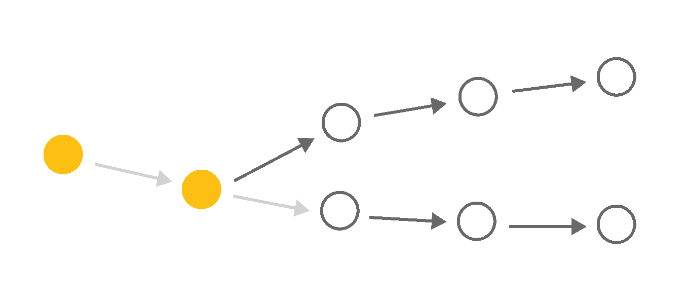

Changing a Life
Exploring how barriers and social interventions influence mobility and inequality
March 22, 2022
Scroll to start
Across a lifetime, we encounter crossroads moments that affect the trajectory of our lives.
Whether we continue our education or whether we take one job over another—these can be critical moments that set us on an upward or downward path of economic mobility.
The options available to people at these crossroads moments and the decisions they make—or that are made for them—are influenced by many things, such as where they live, how much money they have, and what structural barriers they face.
But what if interventions at these crossroads moments could make a difference early on? What if those differences could change a person’s path?
What if those interventions reached hundreds of thousands of people?
We aimed to answer those questions with the Social Genome Model, a microsimulation tool that can project how changes in adolescence and early adulthood can influence well-being later in life.
We used this model to explore multiple scenarios to see how different early experiences and circumstances might affect lifetime earningsLifetime earnings are discounted present values in 2018 dollars. and income disparities between Black, Hispanic, and WhiteFor this project, we use “White” to refer to people who are not Black or Hispanic. About 93.4 percent of this group identify as White, 3.3 percent identify as Asian or Pacific Islander, 2.4 percent identify as more than one race, and 0.9 percent identify as Native American. We do not have enough data to estimate changes separately for the individual races in this category. people.
What would happen if we could undo the damage of structural racism, reform the criminal justice system, or ensure everyone had good jobs?
What if more people could attend high-quality schools, earn degrees, or get job training?
We explored what those changes might mean for economic mobility and inequality.


They tell us that the cost of structural racism is high, particularly for Black people; interventions early in life can pay off; and progress is possible.
We urge readers not to compare interventions because they differ in scale and scope and the costs are not precise. Also, no single intervention is a silver bullet, just as no single crossroads moment consistently puts people on a path to better economic mobility.
But because early interventions ripple through a person’s lifetime, even modest improvements can be meaningful. And combining several approaches could lead to substantial and life-changing differences. What if the country was bold enough to try?